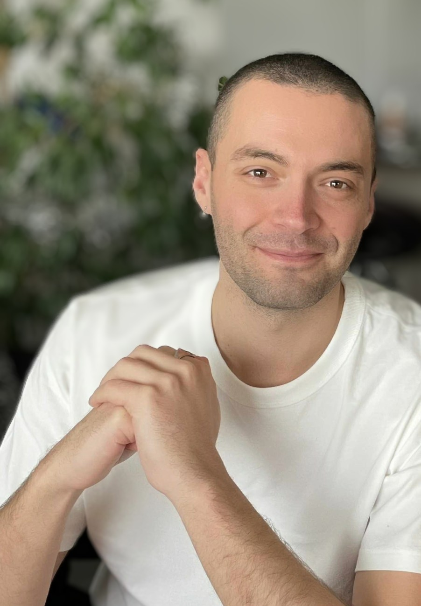

01
AI · Geosciences · Remote sensing
AI for geosciences and planetary landscapes
I develop artificial intelligence and spatial analysis methods to predict and analyze geological and geomorphological structures using satellite, topographic, and geophysical data.
5Publications
23Citations
3H-Index
338 hTeaching Geosciences
About
Working at the crossroads of naturalistic hypotheses and numerical tools

Hello! I'm Jimmy Daynac.
I am a geosciences researcher specializing in artificial intelligence applied to geomorphology and georesources. I am particularly interested in the interactions between fluid flow and the substrate, as well as transport, deformation, and preservation processes in sedimentary systems, from aeolian bedform fields to the control of lithological and structural heterogeneities associated with fluid source and migration in reservoir systems and mineralization processes.
I combine remote sensing, field observations, modeling, and statistical/predictive analyses to quantify the mechanisms of transport, deformation, preservation, and fluid-rock-sediment reactivity in both modern and ancient sedimentary systems.
Research
Research axes built around one question: what can spatial patterns reveal?
02
Aeolian dune pattern and dynamics
03
Georesources and fluid systems
Click on a research project to learn more.
Publications
Articles in Peer-Review Journals & manuscripts
5
Radiolysis and Fe-Biotite Alteration: Questioning the Origin of H2-Bearing Fluid Inclusions in the Yorke Peninsula Granites, South Australia
Multiple drillings in the Yorke Peninsula, South Australia, recently confirmed the presence of natural hydrogen (H2) in shallow sedimentary units. While radiolysis and Fe-oxidation in the basement are potential generation mechanisms, their respective contributions remain unconstrained. This study investigates the H2-generation potential of Fe-rich Hiltaba Suite granites (~1.5 Ga) through petrographic analyses of a basement drill core collected near H2 occurrences. Fluid circulation, a prerequisite for both radiolysis and Fe-oxidation, is evidenced by feldspar sericitization and fluid inclusions. Raman spectroscopy and sample crushing analyses reveal H2 and He, suggesting that the Hiltaba granites contribute to the gas budget observed in the overlying sedimentary units. He isotopic analyses indicate a crustal He origin and radiolytic H2 generation. A combination of SEM, TEM, EPMA and STXM analyses showed that biotite chloritization did not involve Fe-oxidation, ruling out any significant contribution of Fe oxidation to H2 generation. Geothermometric calculations indicate that the last fluid circulation event occurred at 300–400°C, implying that the system last opened dynamically at least 370 Ma ago. Consequently, diffusive migration of H2 and He from the basement may account for the gas fluxes in the sedimentary cover.
Link to the article
4
Global-scale AI-powered prediction of hydrogen seeps
Natural hydrogen (H2) holds promising potential as a clean energy source, but its exploration remains challenging due to limited knowledge and a lack of quantitative tools. In this context, identifying active H2 seepage areas is crucial for advancing exploration efforts. Here, we focus on sub-circular depressions (SCDs) that often mark high H2 concentration in soils, thought to correspond to deeper fluxes seeping at the surface, making them promising targets for exploration. Coupling open-access Google Earth imagery and in-field H2 measurement data, an artificial intelligence model was trained to detect seepage zones. The model achieves an average precision of 95%, detects and maps seepage zones in new regions such as Kazakhstan and South Africa, and highlights its potential for global application. Preliminary spatial analyses show that geological features control the distribution of H2-SCDs that can emit billions of tons of H2 at the scale of a sedimentary basin. This study paves the way for a faster and more efficient methodology for selecting H2 exploration targets.
Link to the article
3
Identification of natural hydrogen seeps: Leveraging AI for automated classification of sub-circular depressions
Hydrogen has long been used as an energy vector, but the recent discovery of natural hydrogen (H2) opens the door for its use as a direct energy source. Identifying H2 seepages is therefore crucial to advance exploration. Although the scientific community does not yet fully understand the parameters controlling H2 leaks from underground, sub-circular depressions appear to be key indicators associated with these emissions. However, distinguishing SCDs from similar landforms remains a challenge. This study leverages open-source multispectral and high-resolution imagery to train a deep learning model for classifying rounded landforms and detecting H2-related structures. The model achieved 90% accuracy with Google Maps imagery, outperforming Sentinel-2 multispectral data. Applied to a pre-existing data set from Brazil, the model allowed large-scale screening, discarding 52% of the structures as non-H2 emitting ones and pinpointing high-potential areas for field validation.
Link to the article
2
A new workflow for mapping dune features (outline, crestline, defects) combining deep learning and skeletonization from DEM-derived data
Dune morphology, dynamics, and spatial arrangement mainly depend on the characteristics of the moving fluid and of the sediment supply, modulated by surface conditions. A comprehensive mapping of dunes can provide quantitative information for characterizing, analyzing, and monitoring dune patterns and dynamics. This study presents a workflow for the automated mapping of dune outlines, crestlines, and defects in GIS, based on DEM-derived data and suitable for morphometric analysis. A U-Net convolutional neural network was adapted to map dune outlines, while skeletonization was used to map crestlines. Crestline networks were then used to refine the individualization of coalescent dune outlines, and dune defects were mapped using network topological analysis. Applied to the Rub' Al Khali sand sea, the workflow produced a map of 122,522 dune outlines/crestline networks and 514,083 defects, enabling morphometric mapping and analysis.
Link to the article
1
Stratigraphy in the Greenland/Iceland/Norwegian (GIN) seas: A multiproxy approach on Pleistocene sediments
A multiproxy sedimentological study was conducted on five sediment cores retrieved between 67 and 79°N in the Greenland/Iceland/Norwegian seas to infer a common chronostratigraphic model. The model is based on geochemical, physical and micropaleontological proxies routinely measured in marine sediment cores, including XRF-derived elemental contents, sediment lightness and color, magnetic susceptibility, planktonic foraminiferal assemblages and coccolith stratigraphy. The study shows that high-resolution analyses using standard paleoceanographical tools are powerful for establishing core-to-core correlations and proposes a chronostratigraphic framework based on correlation with the LR04 benthic oxygen isotope reference stack.
Link to the article
1
Contribution de l'Intelligence Artificielle à la cartographie pour l'analyse des dunes à l'échelle d'un désert: cas d'étude du Rub'Al Khali
Aeolian dunes at different scales are the primary topographic forms in aeolian systems and are found on various planetary bodies such as Earth, Mars, or Venus. They result from the interaction between wind, transported sediments, and the substrate. This thesis proposes a new method for mapping aeolian dunes by coupling deep learning to delineate dune outlines, skeletonization, and network analysis to map crestlines and connectivities. The developed algorithms reach an accuracy of around 90% and enabled the creation of a large database of several thousand dunes from the Rub'Al Khali desert. From this database, the morphological variability of the dunes was analyzed using ERA5-Land wind data and spatial morphometric statistics. Principal Component Analysis highlights dominant morphometric controls, while spatial tests confirm a significant organization of dunes at desert scale. The comparison with wind data supports an evolutionary model in which dune shape, size, and orientation are controlled by directional sand fluxes associated with Shamal and Kharif winds, revealing two dune growth modes: elongation in the west and instability-driven vertical growth in the east.
Link to the thesis
1
Artificial intelligence and statistical modeling methods applied to the automated detection of geological structures from geospatial data
2
Soil gas database
Curriculum Vitae
Academic background, positions, professional experience and funding.
Download full CV · PDFEducation
2021 - 2024
Ph.D. · Earth and Planetary Sciences
Le Mans University, France · UMR 6112 LPG
Advisors: Paul Bessin, Stéphane Pochat, Régis Mourgues.
Contribution of Artificial Intelligence to mapping for desert-scale dune analysis: Rub' Al Khali case study.
2019 - 2021
M.Sc. · Sedimentology and Paleoclimatology
Bordeaux University, France
2021 internship: UMR 6112 LPG, advisors Olivier Bourgeois and Sabrina Carpy. Determination of the dispersion relationship of Martian bedforms (aeolian and sublimation), and development of a new method to analyse bedform geometry.
2020 internship: UMR 5809 EPOC, advisor Thierry Mulder. Carbonate shoal formation study in the Bahamas (Schooner Cays), including hydrodynamic and deposit reconstruction of Bahamian oolithic facies.
2017 - 2019
B.Sc. · Earth and Environmental Sciences
Bordeaux University, France
2019 internship: UMR 5809 EPOC, advisor Thibault Cavailhès. Study of a fractured system in Saudi Arabia using aerial and satellite imagery.
2018 internship: UMR 5809 EPOC, advisors Frédérique Eynaud, Jérome Bonnin and Marjolaine Sabine. Study of benthic foraminifera in sediment cores, paleoclimate reconstruction, and recognition of siliceous palynomorphs.
2017 internship: UMR 5809 EPOC, advisors Marjolaine Sabine and Sébastien Zaragosi. Study and analysis of a Norwegian Sea sedimentary core from the MOCOSED 2014 mission.
Academic positions
2026
IGR / Research Engineer · Le Mans University
Three-month research engineer position.
2024 - 2025
ATER / Assistant Professor · Le Mans University
Teaching and research in geosciences, GIS, Python, geophysics and georesources.
2021 - 2024
Ph.D. · Le Mans University
Doctoral research in Earth and Planetary Sciences, with a focus on artificial intelligence for dune mapping and morphometric analysis.
Professional experience
2026
President · AI.TER
Artificial Intelligence for Terrain and Exploration Resources.
2016 - 2020
Science communicator · CAPSCIENCES Museum, Bordeaux
Science outreach and public communication.
Funding
2026
Service for VEMA Hydrogen Company
Funding for the position of research engineer: 20K €.
Awards
2025
Laureate of the RISE CNRS program — AI.TER project
CNRS program supporting innovative research projects. The AI.TER project, focused on the development of artificial intelligence tools for terrain analysis and exploration resources, was selected as a laureate, highlighting its potential impact and innovation in geosciences.
Read the CNRS article2025
Thesis award — Sensitivity and Environmental Innovation 2025 mention
Recognition of the quality and relevance of doctoral research on the application of artificial intelligence to dune mapping and analysis, with a focus on environmental sensitivity and innovation.
Contact